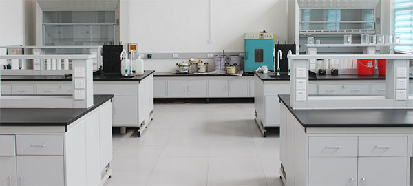
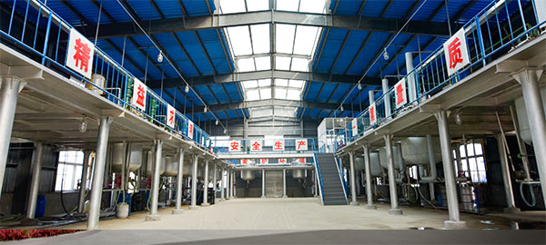

漯河市天龙化工有限公司, 是国内较早生产沥青乳化剂的专业厂家。自86年建厂以来，全心致力于沥青乳化剂的研发和生产。是中国公路学会道路工程分会乳化沥青学组会员单位；与行业内多家知名院校和科研机构常年开展技术合作，具备很强的技术创新和新产品的研发能力
 公司主要产品有冷再生、微表处、粘层、透层、沥青抗剥落剂、沥青改性剂（SBR胶乳）六大系列二十个产品，年生产能力6000吨。2015年产品销量突破3800吨，产值7000多万元，产品销售全国及出口海外。
公司秉承质量第一、客户至上的经营理念，从原料购进、组织生产、质量监测、产品销售到售后服务，制定和实施了严格规范的质量控制体系，形成了一套行之有效的质量管理模式。公司为更好的服务于客户，专门设立了质量跟踪服务部门，配备了专业的技术人员和乳化沥青检测仪器，可以为客户提供全方位的产品售后技术支持，并能够按照客户需求，提供个性化的乳化沥青生产技术。
诚信、超越、持续成长一直是天龙公司信奉的企业经营理念，其核心是以诚信为本，以超越自我不段创新